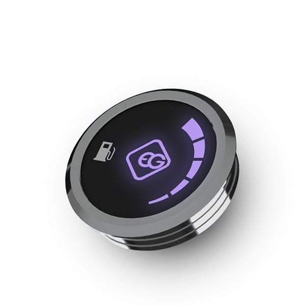

EG INJECTO 48.4
это контроллер последовательного впрыска газа для автомобилей с прямым впрыском бензина.
Инновационный алгоритм автоматической калибровки и картирования, позволяющий настраивать систему с широким спектром транспортных средств в простой и быстрый способ.
Встроенный в контроллер осциллограф позволяет быстро определять входные сигналы и проверять правильность выполненных соединений.
Бицепс
Подъём штанги на бицепс, подъём гантелей на бицепс, молоты, подъём штанги скотт на бицепс сидя на скамье, концентрированный подъёмы на бицепс.
EG METANO
EG METANO отличается высокой стабильностью выходного давления и высокой надежностью. Обеспечивает долгосрочную и беспроблемную работу даже в наиболее экстремальных температурных условиях, что подтверждают результаты гомологических испытаний.
Трицепс
Французский жим, разгибания рук из-за головы, разгибания на трицепс в наклоне, тяга верхнего блока, тяга верхнего блока с веревкой.

EG RGB RING
Современный и элегантный переключатель с встроенным зуммером. Совместим со всеми контроллерами линий EG BASICO, EG AVANCE и EG SUPERIOR. Позволяет вручную выбрать тип топлива нажатием кнопки переключателя.
Плечи
Жим штанги сидя за голову, жим штанги с груди сидя, жим гантелей вверх сидя, тяга штанги к подбородку, разводка гантелей в стороны.